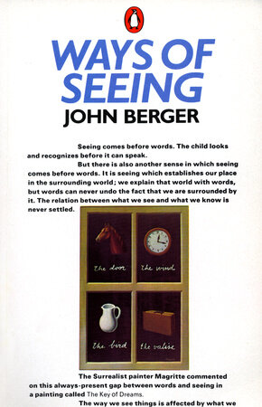
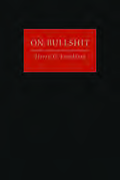

52:25 · 5 OPERE
Il caso Barbero.
Il filo del discorso
Il contributo esamina la reazione mediatica alla firma di Alessandro Barbero contro il Green Pass universitario nel settembre 2021. Il relatore interpreta la attenzione rivolta allo storico, rispetto agli altri firmatari, come un segnale dei vincoli che la notorietà televisiva imporrebbe al dissenso. Commenta poi un corsivo di Massimo Gramellini e altri articoli, discutendo la differenza fra riportare fatti e formulare valutazioni competenti.
Leggi la sintesi completaRiduci la sintesi
Il percorso si allarga alla mistificazione del linguaggio, attraverso un richiamo iniziale a John Berger e il saggio di Harry Frankfurt sul disinteresse per la verità. Nella seconda parte il relatore contesta la presentazione di Daniela Mapelli come rettrice già in carica e richiama notizie scientifiche sulla trasmissione della variante Delta. La conclusione elogia la coerenza di una insegnante che avrebbe lasciato il lavoro. La scheda tiene separati la critica alla comunicazione, il giudizio sulle politiche sanitarie e le evidenze disponibili. Precisa inoltre una confusione importante: il medico Sergio Harari, autore dell’articolo citato nel 2021, è una persona diversa dallo storico Yuval Noah Harari richiamato per il 2020. Le accuse personali, le previsioni di processi e i giudizi clinici usati in senso polemico non vengono assunti come fatti accertati.
I libri nel discorso

Ways of Seeing
Identificazione probabile
Note sul riferimento
Copertina: Penguin Books, paperback, 1 dicembre 1990, 176 pagine, ISBN 9780140135152. Prima pubblicazione 1972, dalla serie BBC. Edizione di riferimento autentica, non identificata nel filmato.
La attribuzione a Berger è esplicita; il titolo dell’opera è riconosciuto per allusione, non letto nel contributo. Nessuna pagina della edizione 1990 è attribuita alla citazione senza riscontro diretto.
John Berger esplicito e definizione della mistificazione riconoscibile; titolo del libro non pronunciato.

On Bullshit
Note sul riferimento
Copertina: Princeton University Press, 2005, 80 pagine, hardcover, ISBN 9780691122946. Copertina autentica estratta dall’immagine incorporata nella pagina133 del PDF del catalogo 2019, paginaeditoriale131. Risoluzione nativa120×180; nessuna ricostruzione grafica.
Il relatore dice di non aver letto integralmente il volume. L’immagine è una copertina del libro riprodotta nel catalogo dell’editore, non una pagina del saggio o la copertina dell’intero catalogo.
Harry Frankfurt, anno 2005, titolo On Bullshit e distinzione dal mentire espliciti.

Codice di Norimberga (The Nuremberg Code)
Note sul riferimento
Pagina del documento: riproduzione MIT: Dieci principi formulati nel verdetto del processo ai medici del 1947. Testo ripubblicato in Trials of War Criminals before the Nuernberg Military Tribunals, volume II, U.S. Government Printing Office, 1949, pp. 181–182. Immagine della prima pagina della riproduzione distribuita dal MIT nel corso STS.011, autunno 2007.
Vista integralmente la pagina PDF 2 della lettura MIT: titolo The Nuremberg Code, credito alla pubblicazione governativa del 1949, intestazione sui crimini contro l’umanità e inizio dei principi Permissible Medical Experiments. È una riproduzione didattica con numero di pagina 313, non una copertina, un frontespizio del 1947 o una scansione diretta della pagina 181 del volume governativo.
Codice di Norimberga esplicito; distinto dalle norme ordinarie sulla vaccinazione.

Costituzione della Repubblica Italiana
Note sul riferimento
Copertina dell’edizione Intra aggiornata al 2023: Intra · 2023 · introduzione di Umberto Vincenti
Copertina autentica del testo integrale, aggiornata alla legge costituzionale 26 settembre 2023 n.1. È successiva al filmato del 2019 e non rappresenta la versione storica letta dal relatore. Umberto Vincenti firma l’introduzione.
Costituzione richiamata nella discussione su consenso e obbligo; nessuna edizione indicata.

Beffe e beffatori in nome di una crisi
Note sul riferimento
Copertina: Lulu, 2021
Beffe e beffatori in nome di una crisi esplicito, con richiamo a una citazione del volume.